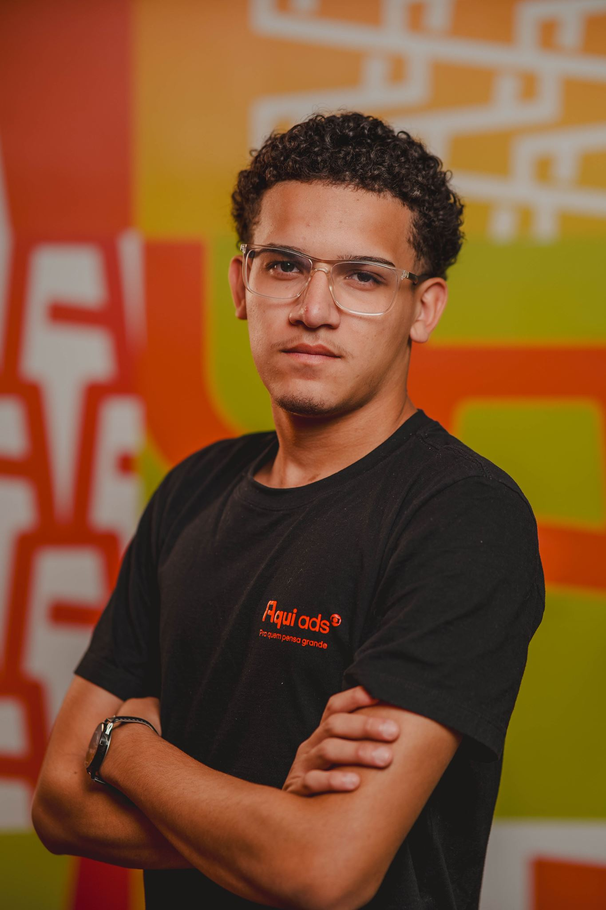

Analista de Suporte de TI · Foco em Infraestrutura & Segurança
N1 / N2
Suporte Técnico
PowerShell
Automação & Setup
Microsoft
Ambientes & AD
Profissional de TI com experiência prática em suporte técnico corporativo presencial e remoto, troubleshooting de hardware e software, e administração no ecossistema Microsoft 365 e Active Directory. Forte inclinação para o desenvolvimento de rotinas automatizadas via scripts em PowerShell para ganho de escala operacional e apoio direto a demandas de Infraestrutura e Cibersegurança.
Analista de Suporte Júnior
Automação • N1/N2 • Infraestrutura de TI
Resolução de chamados de média complexidade, manutenção corretiva e preventiva de equipamentos, homologação de novas estações corporativas e criação de rotinas automáticas de setup e diagnóstico de hardware.
Aprendiz de TI
Atendimento Direto • Hardware corporativo
Atendimento rápido de primeiro nível para colaboradores e executivos em software e infraestrutura de salas de reuniões. Homologação e preparação de ativos de TI corporativos.
Jovem Aprendiz → Estagiário
Active Directory • Office 365 • CRM
Administração de contas no Active Directory, liberação de acessos, suporte geral ao ecossistema Microsoft 365 e engajamento na implantação de e-mails em campanhas via CRM.
🖥️ SUPORTE & INFRA
Diagnóstico fino de hardware e sistemas operacionais, formatação, homologação e inventário patrimonial de ativos.
☁️ CLOUD & IDENTIDADE
Administração de contas corporativas, gestão de acessos e permissões centralizadas.
⚙️ AUTOMAÇÃO & DEV
Implementação de lógica de programação para acelerar rotinas internas manuais ou processos estáticos.
🔐 SEGURANÇA DA INFO
Aplicação de boas práticas de segurança defensiva, isolamento de acessos seguros, hardening e VPN.
⚙️ IT Automation Toolkit
Desenvolvimento de scripts personalizados em PowerShell para automatização do setup inicial e padronização rápida de máquinas Windows corporativas.
🔍 Hardware Diagnostic Tool
Módulo utilitário programado para triar especificações e integridade de hardware em estações de trabalho, coletando dados críticos em lote.
🖥️ Asset Audit Script
Script estruturado de auditoria que varre as máquinas de rede local para levantar informações detalhadas de inventário e licenças ativas automaticamente.
Análise e Desenvolvimento de Sistemas
Centro Universitário FMU • Graduação Tecnológica (Previsão 2026 – 2028)
Cursos de Especialização
- Introdução à Segurança da Informação (Cisco)
- Git e Controle de Versão (GitHub)
- Lógica de Programação & Automação
Pronto para somar na sua equipe ou trocar experiências sobre tecnologia e segurança: